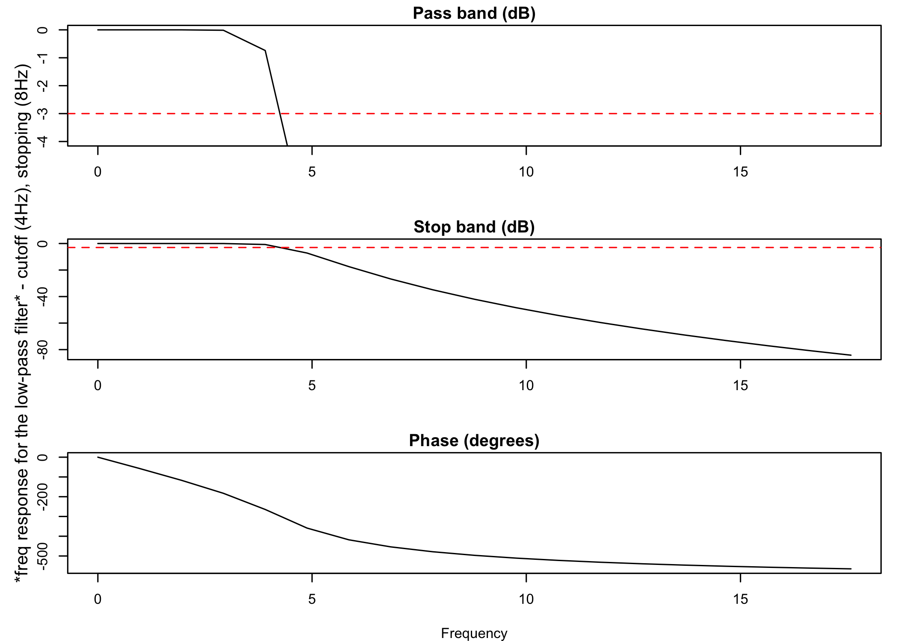
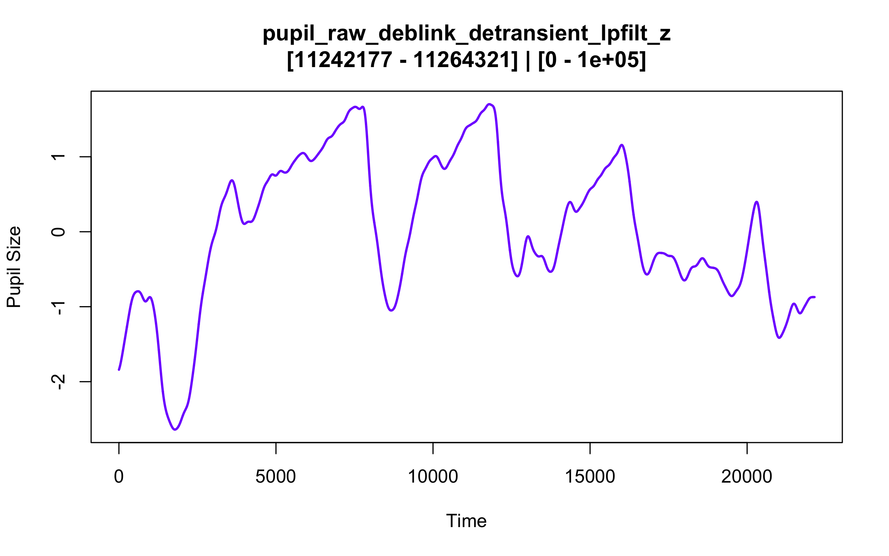
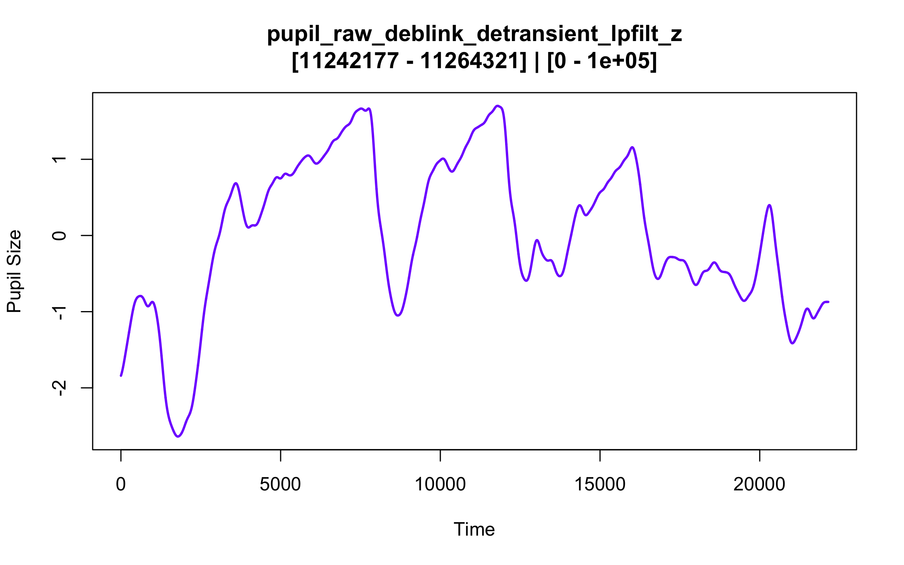

Installation
You can install the development version of eyeris from GitHub with:
# install.packages("devtools")
devtools::install_github("shawntz/eyeris")or
# install.packages("pak")
pak::pak("shawntz/eyeris")Example
the glassbox() “prescription” function
This is a basic example of how to use eyeris out of the box with our very opinionated set of steps and parameters that one should start out with when preprocessing pupillometry data. Critically, this is a “glassbox” – as opposed to a “blackbox” – since each step and parameter implemented herein is fully open and accessible to you. We designed each pipeline step / function to be like legos – they are intentionally and carefully designed in a way that allows you to flexibly construct and compare different pipelines.
We hope you enjoy! -shawn
set.seed(1)
library(eyeris)
demo_data <- system.file("extdata", "assocret.asc", package = "eyeris")
eyeris_preproc <- glassbox(demo_data, detrend_data = F, lpfilt = list(plot_freqz = T))
#> ✔ [ OK ] - Running eyeris::load_asc()
#> ✔ [ OK ] - Running eyeris::deblink()
#> ✔ [ OK ] - Running eyeris::detransient()
#> ✔ [ OK ] - Running eyeris::interpolate()
#> ℹ [ INFO ] - Skipping eyeris::interpolate(): No NAs detected in pupil data for interpolation.
#> ✔ [ OK ] - Running eyeris::lpfilt()
#> ✔ [ OK ] - Skipping eyeris::detrend()
#> ✔ [ OK ] - Running eyeris::zscore()
 
Comments, suggestions, questions, issues
Please use the issues tab (https://github.com/shawntz/eyeris/issues) to make note of any bugs, comments, suggestions, feedback, etc… all are welcomed and appreciated, thanks!